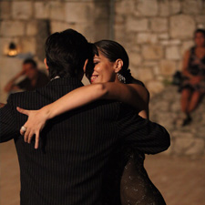

Η Romina Tumini είναι μία Ψυχολόγος -Ψυχοθεραπεύτρια
η οποία πιστεύει ότι οι άνθρωποι είναι πολύ παραπάνω από το σύνολο των συμπεριφορών τους ή το αποτέλεσμα του παρελθόντος τους. Η πολυκλαδείς ακαδημαϊκές της σπουδές την βοήθησαν να χτίσει και να εφαρμόσει μια ολιστική προσέγγιση στη Συμβουλευτική και Ψυχοθεραπεία.
Ποια ειμαι
Είμαι ψυχολόγος και σύμβουλος – ψυχοθεραπεύτρια εκπαιδευμένη στην Προσωποκεντρική Προσέγγιση και στην Focusing-Βιωματική Ψυχοθεραπεία. Έχω εξειδικευτεί στη θεραπεία του ψυχικού τραύματος , και διαθέτω ιδιαίτερη εμπειρία στο πεδίο του ψυχοσωματικού πόνου.
Επί σχεδόν 20 χρόνια υπήρξα δασκάλα και χορεύτρια του Αργεντίνικου Τάνγκο, και έχω επίσης εκπαιδευτεί ως Τανγκο-Θεραπεύτρια. Δημιούργησα το Innertango ως μια προσέγγιση που συνδυάζει το Focusing με την παραδοσιακή Τανγκο-Θεραπεία.
Ως μετανάστρια η ίδια, έχω προσωπική εμπειρία σε ζητήματα όπως το «να μην ανήκεις», τις διαπολιτισμικές διαφορές, τη νοσταλγία, και είμαι ιδιαίτερα ευαίσθητη στην απώλεια που συνεπάγεται η μετανάστευση. Επιπλέον, έχω εργαστεί θεραπευτικά με μετανάστες και πρόσφυγες στους Γιατρούς του Κόσμου και στο Ελληνικό Κέντρο Αποκατάστασης Θυμάτων Βασανιστηρίων.
Σταδιοδρομια
-
2008-2013
Focusing Βιωματική Τραυματοθεραπεία
Ελληνικό Κέντρο Focusing, Αθήνα, Ελλάδα. -
2007-2012
Προσωποκεντρική και Focusing-Βιωματική Ψυχοθεραπεία
Ελληνικό Κέντρο Focusing, Αθήνα, Ελλάδα.2007-2011
Προσωποκεντρική και Focusing-Βιωματική Συμβουλευτική
Ελληνικό Κέντρο Focusing, Αθήνα, Ελλάδα.2007-2011
Focusing-Βιωματική Θεραπεία
The Focusing Institute, New York -

2009
Εκπαίδευση ως Τανγκο-Θεραπεύτρια, εξειδίκευση στη Μέθοδο του Dr Trossero.
Rosario, Argentina. -

2008
Master στην Κλινική Ψυχοπαιδαγωγική, με προσέγγιση Ψυχαναλυτική
Πανεπιστήμιο της Leon, Ισπανία2007
Diploma of BA/BSc (Hons) Psychology
The Open University, UK -
1995
Πτυχίο Δασκάλας στην Πρωτοβάθμια Εκπαίδευση
Εθνικό Πανεπιστήμιο του Comahue, Αργεντινή